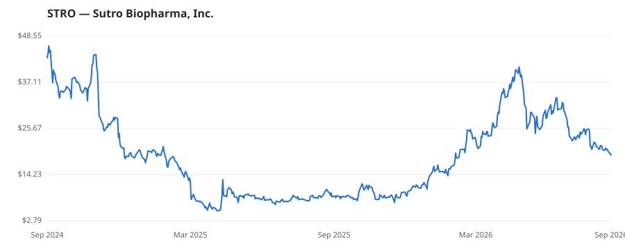

bullish · bearish · n/a — dots: price>SMA10 · SMA10>SMA50 · SMA50>SMA200 · up>down volume (20d)
Pharmaceuticals & Biotech · small cap

Sutro Biopharma Inc is a clinical-stage drug discovery, development, and manufacturing company. The company manufactures next-generation protein therapeutics for cancer and autoimmune disorders through its proprietary integrated cell-free protein synthesis platform, XpressCF. Products offered by the company include STRO-001 for patients with multiple myeloma and lymphoma and STRO-002 for the treatment of ovarian and endometrial cancers. Company's wholly-owned product candidate is STRO-004, a single homogeneous ADC directed against tissue factor which are developing for the treatment of solid t BIOLOGICAL PRODUCTS, (NO DIAGNOSTIC SUBSTANCES) · website
| Revenue | $102.5M | Net income | $-191.1M |
|---|---|---|---|
| Operating income | $-158.4M | Diluted EPS | $-22.49 |
| Assets | $173.8M | Equity | $-132.5M |
🛒 Newly buying: Merck & Co., Inc. (+211%, 1.7% of book)
| Fund | Fund alpha vs SPY | Position | % of book |
|---|---|---|---|
| Merck & Co., Inc. | +211% | $9M | 1.7% |
Hedge data: SEC EDGAR 13F · ranked funds beat SPY in >50% of their quarters · fund alpha = mirror-portfolio return minus SPY.